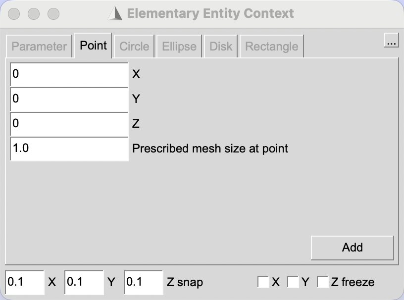
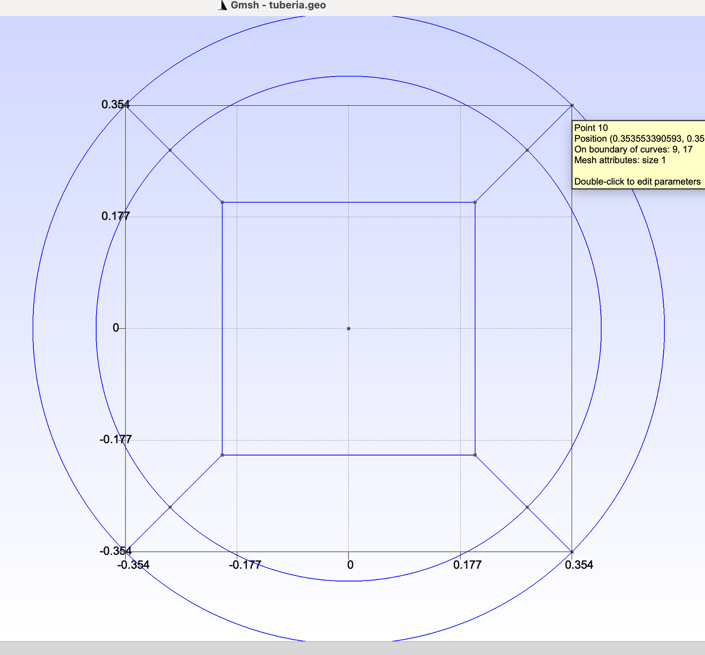
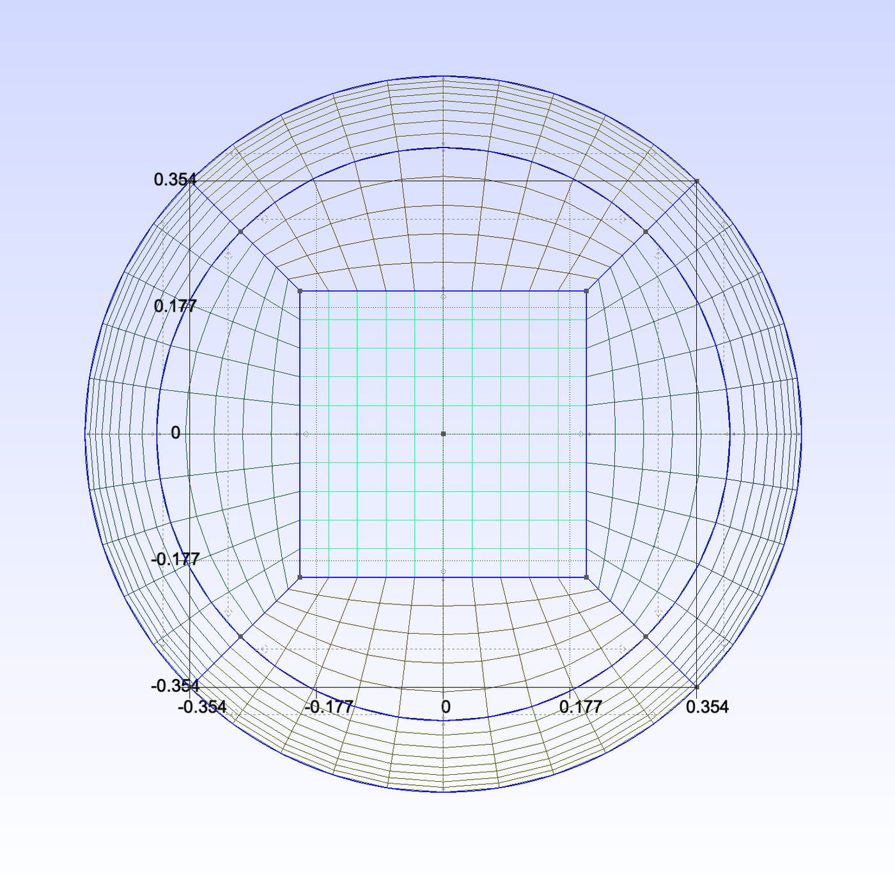
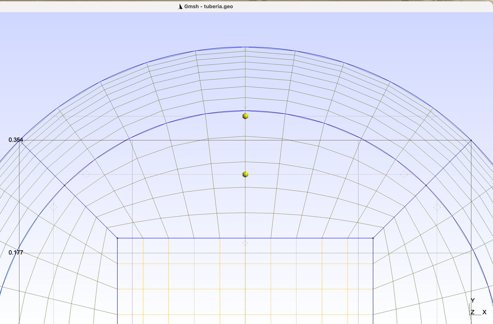
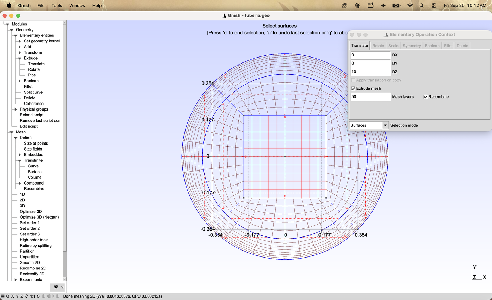
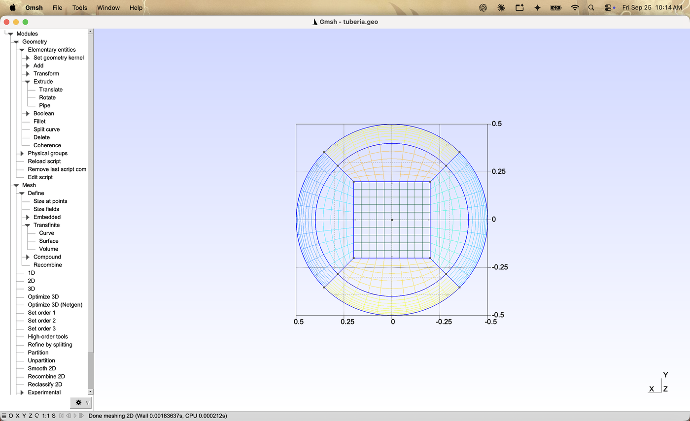
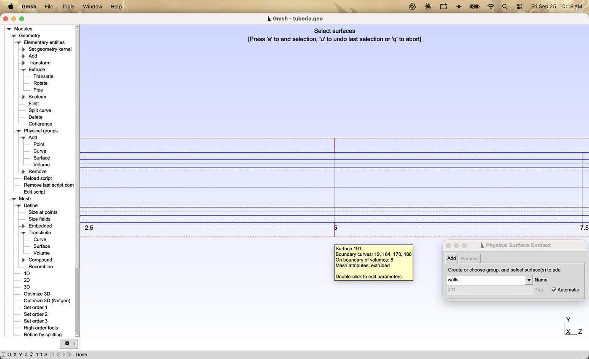
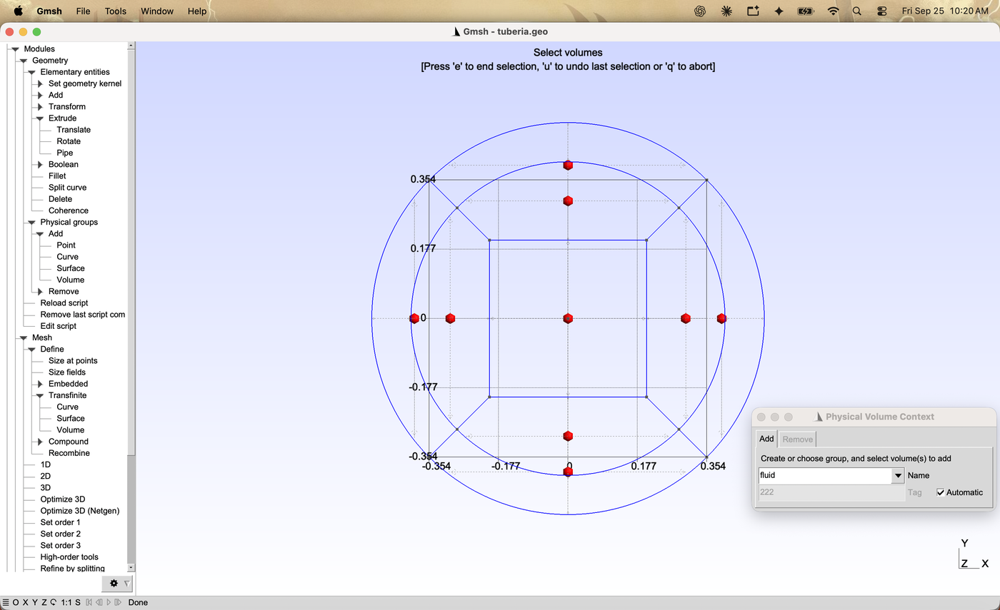
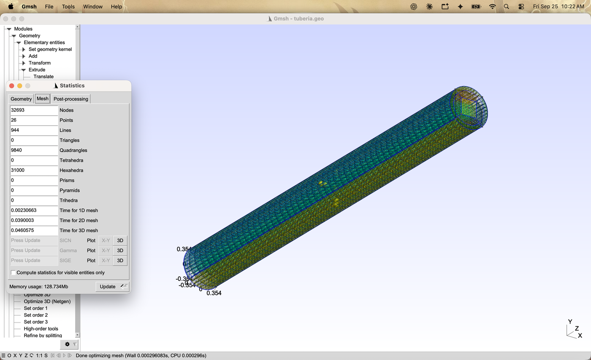
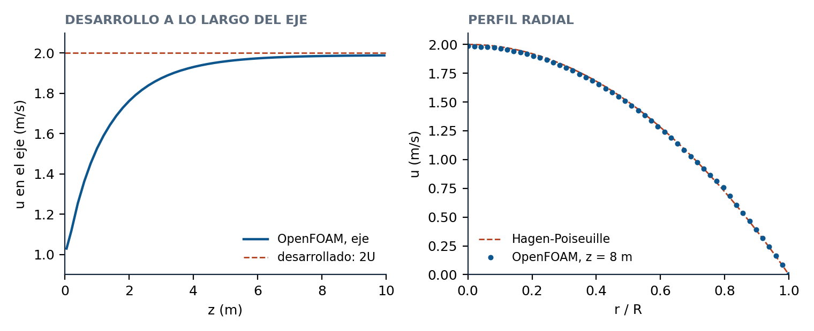

The Straight Pipe: an O-Grid Section with a Boundary Layer
A circular section split into nine four-sided blocks, cells that shrink toward the wall by a fixed ratio, and a 3D mesh of 31 000 hexahedra built only with the interface buttons. OpenFOAM reproduces the Hagen-Poiseuille pressure gradient within 1 %.
Gmsh · Tutorial 3.1.1
La tubería recta: una sección en O con capa límite
Una sección circular partida en nueve bloques de cuatro lados, celdas que se adelgazan hacia la pared en una razón fija y una malla 3D de 31 000 hexaedros hecha sólo con los botones de la interfaz. OpenFOAM reproduce el gradiente de presión de Hagen-Poiseuille con un error del 1 %.
Gmsh · Tutorial 3.1.1
Das gerade Rohr: ein O-Gitter-Querschnitt mit Grenzschicht
Ein Kreisquerschnitt aus neun vierseitigen Blöcken, Zellen, die zur Wand hin in festem Verhältnis dünner werden, und ein 3D-Netz aus 31 000 Hexaedern, nur mit den Schaltflächen der Oberfläche gebaut. OpenFOAM trifft den Druckgradienten nach Hagen-Poiseuille auf 1 %.
Estimated reading: 40 minLectura estimada: 40 minLesedauer: ca. 40 minLevel: undergraduateNivel: licenciaturaNiveau: BachelorVerified on Gmsh 4.15.2 and OpenFOAM 13Verificado en Gmsh 4.15.2 y OpenFOAM 13Geprüft mit Gmsh 4.15.2 und OpenFOAM 13
Full English translation in preparation. Each section below carries a summary of its content; the complete text, figures and tables are available in the Spanish version, which the ES button above selects.
Build a hexahedral mesh of a straight pipe with the interface buttons only: a nine-block O-grid section, a geometric progression toward the wall, a 50-layer extrusion selected with a box, and physical groups chosen from rotated views; then check it in OpenFOAM against Hagen-Poiseuille.
The idea
Nine blocks, and thin cells only where the wall needs them
A polar grid collapses at the axis; the O-grid replaces the centre with a square block. The ring next to the wall has radial lines, so its cells can be made thin toward the wall while staying orthogonal to it. In laminar flow the entrance length is about 0.05 Re D; with Re = 100 a pipe of 10 D suffices.
Recipe
From an empty file to the .msh in nine steps
Nine steps from an empty file to the .msh, with what Gmsh answers at each one.
Steps 1 and 2
Thirteen points, twelve lines and eight arcs
Thirteen points written as expressions, twelve lines and eight circle arcs. The 1:1 button frames the points, not the arcs, so the wall arcs fall outside the view until one zooms out.
Step 3
Nine four-sided surfaces
Nine Plane surfaces, each chosen curve by curve.
Steps 4 and 5
Transfinite with a progression toward the wall
Three Transfinite Curve groups: 11 nodes on arcs and square sides, 6 on the core lines, and 9 with progression 0.85 on the lines to the wall. The first cell at the wall is 6.61 mm, as the geometric series predicts. The 2D mesh has 620 quadrangles.
Step 6
Fifty layers along the axis, selected with a box
Extrude > Translate with DZ = 10, Extrude mesh with 50 layers and Recombine. With Selection mode set to Surfaces, a Ctrl-click box selects the nine surfaces at once.
Step 7
Choosing faces from the right view
A click picks the face in front: the inlet from the back view, the outlet from the front view, the wall from two side views, and the nine volumes with one box.
Steps 8 and 9
31 000 hexahedra and the file for OpenFOAM
Mesh > 3D gives 31 000 hexahedra; the file is exported in MSH 2 as in tutorial 1.1.
Worked example
Predicting the mesh before building it
The cell count, the wall cell height and the maximum aspect ratio follow from three formulas and match Gmsh and checkMesh.
OpenFOAM check
Laminar flow against Hagen-Poiseuille
At Re = 100 the pressure gradient is −0.3231 against −0.3200 from Hagen-Poiseuille, the centreline velocity reaches 1.987 of the theoretical 2, and the profile departs from the parabola by 1.3 % of its maximum.
File
tuberia_recta.geo
The file the interface writes, ordered and commented.
Suggested practice
Three meshes that change one number each
A thinner wall cell, a longer pipe at higher Re, and a finer section.
Key points
What to keep from this guide
Four-sided blocks with radial lines at the wall; the progression sets the wall cell; select by box or from the view where the face is in front.
Common mistakes
What goes wrong and what Gmsh does
Arcs outside the 1:1 view, a Statistics window that swallows clicks, a remembered Extrude mesh box, a box that selects every face, and a click on the wall that picks the outlet.
Sources
References
Gmsh reference manual; White, Fluid Mechanics; OpenFOAM 13 user guide.
Objetivos de aprendizaje
Qué se debe poder hacer al terminar
La tubería es la geometría con la que empiezan casi todos los cursos de flujo interno: tiene solución exacta en régimen laminar y correlaciones bien conocidas en régimen turbulento. Su malla, en cambio, no es trivial: una sección circular no se deja partir en un solo bloque de cuatro lados, y cerca de la pared hacen falta celdas mucho más delgadas que en el centro. Este tutorial la construye sólo con los botones de la interfaz; el archivo que resulta queda listo para convertir sus números en parámetros en el tutorial 3.1.2.
Partir una sección circular en nueve bloques de cuatro lados (una sección «en O») y explicar por qué no conviene una malla polar.
Refinar hacia la pared con una progresión geométrica y predecir la altura de la celda junto a la pared antes de mallar.
Extruir la sección en hexaedros eligiendo las nueve superficies con un recuadro.
Elegir las caras de cada grupo físico desde la vista en que quedan delante, con Tools ▸ Manipulator.
Comprobar la malla en OpenFOAM con un flujo laminar contra la solución de Hagen-Poiseuille.
Qué hace falta. Gmsh 4.15.2 (gmsh.info) y, para la comprobación, OpenFOAM (openfoam.org). Se suponen el 1.1 (Transfinite, Recombine, extrusión, grupos físicos, formato MSH 2) y el 2.2.1 (arcos, superficies con curvas compartidas, la etiqueta amarilla que aparece al detener el puntero).
La idea
Nueve bloques, y celdas delgadas sólo donde las pide la pared
Una malla polar —anillos concéntricos y rayos— parece la forma natural de mallar un círculo, pero en el eje todos los rayos se juntan: las celdas del centro se vuelven triángulos degenerados, muy delgados, justo donde la velocidad es máxima. La sección en O evita el problema poniendo en el centro un cuadro, que se malla como un rectángulo, y uniéndolo con la pared por medio de bloques que van deformándose poco a poco del cuadro al círculo (figura 1).
Figura 1.La sección en O: trece puntos, veinte curvas y nueve bloques. A escala, con la numeración que resulta al crear las entidades en el orden de la receta: puntos en negro (1 es el centro), líneas y arcos en azul (13 a 16 en el círculo intermedio, r = 0.4 m; 17 a 20 en la pared, r = 0.5 m) y superficies en rojo. El anillo sombreado, entre r = 0.4 y 0.5 m, es donde van las celdas delgadas de la capa límite: ahí las líneas de la malla son radiales y cortan la pared en ángulo recto.
La variante de este tutorial tiene nueve bloques, todos de cuatro lados: el cuadro central, cuatro bloques de banda entre el cuadro y un círculo intermedio (r = 0.4 m) y cuatro bloques de anillo entre ese círculo y la pared (r = 0.5 m). Todos los puntos están a 45°, 135°, 225° y 315°, de modo que cada bloque tiene exactamente cuatro esquinas y Transfinite los malla sin indicaciones adicionales.
Por qué un anillo aparte junto a la pared
En el anillo, las líneas que van del círculo intermedio a la pared son radiales: cortan la pared en ángulo recto. Eso permite adelgazar las celdas hacia la pared —donde la velocidad pasa de cero a casi su valor del centro en una distancia corta— sin que se tuerzan. El adelgazamiento se hace con una progresión geométrica: cada celda mide q veces la anterior. Con t = 0.1 m de espesor, n = 8 celdas y q = 0.85, la primera y la última celda miden
La tabla 4 compara esta predicción con la malla, celda por celda.
Qué tan larga
El flujo entra con velocidad uniforme y necesita una longitud de entrada para desarrollar el perfil parabólico. En régimen laminar esa longitud crece con el número de Reynolds; la correlación de Durst et al. (2005) da, para Re = 100,
Por eso la tubería de este tutorial mide 10 D: el flujo está desarrollado en su segunda mitad, que es donde se compara con la teoría. Con Re = 2000 harían falta más de 110 D; en régimen turbulento la longitud de entrada es de 20 a 40 D. Elegir la longitud a partir de Re es uno de los temas del tutorial 3.1.2.
Receta
Del archivo vacío al .msh en nueve pasos
Todo se hace desde un archivo nuevo (File ▸ New, núcleo Built-in, como en el 2.2.1). Cada paso deja una línea en el archivo; entre paréntesis, lo que responde Gmsh.
Puntos.Geometry ▸ Elementary entities ▸ Add ▸ Point: los trece puntos de la tabla 1, con Add después de cada uno (Point(1) = {0, 0, 0, 1.0}; … Point(13) = {0.5*Cos(Pi/4), -0.5*Sin(Pi/4), 0, 1.0};).
Líneas y arcos.Add ▸ Line: las doce líneas, del cuadro hacia afuera. Add ▸ Circle arc: los ocho arcos, con tres clics cada uno —inicio, centro (el punto 1) y final— (Circle(13) = {6, 1, 7};).
Superficies. Alejar la vista con la rueda del ratón hasta ver la pared entera; Add ▸ Plane surface, un clic en cada curva de la tabla 2 y e (Plane Surface(1) = {1};).
Nodos por curva.Mesh ▸ Define ▸ Transfinite ▸ Curve, en tres grupos: 11 nodos en los lados del cuadro y los ocho arcos; 6 en las líneas 5 a 8; 9 con Parameter 0.85 en las líneas 9 a 12 (Transfinite Curve {9, 10, 11, 12} = 9 Using Progression 0.85;).
Superficies estructuradas.Transfinite ▸ Surface en cada bloque (clic en su cruz y e), Recombine en los nueve y Mesh ▸ 2D (Done meshing 2D; 620 cuadriláteros).
Extrusión.Geometry ▸ Elementary entities ▸ Extrude ▸ Translate: DZ = 10, Extrude mesh con 50 capas y Recombine, Selection mode en Surfaces; un recuadro sobre la sección y e (Extrude {0, 0, 10} { Surface{1}; … Surface{9}; Layers {50}; Recombine; }).
Grupos físicos. Desde las vistas de la tabla 5: inlet, outlet, walls y fluid.
El archivo para OpenFOAM.File ▸ Export, tuberia.msh, y en MSH Options el formato Version 2 ASCII, como en el 1.1.
Pasos 1 y 2
Trece puntos, doce líneas y ocho arcos
El diálogo de Add ▸ Point (figura 2) es el mismo del 2.2.1. Los puntos se crean en el orden de la tabla 1 para que su numeración coincida con la de la figura 1; el orden de creación es lo único que decide los números.

Figura 2.Geometry ▸ Elementary entities ▸ Add ▸ Point. Los campos X y Y aceptan expresiones: para los puntos a 45° se escribe 0.4*Cos(Pi/4) y Gmsh guarda la expresión en el archivo. Add crea el punto y deja el diálogo abierto para el siguiente.
Punto
X
Y
1
0
0
centro (se usa como centro de los arcos)
2
0.2
0.2
esquinas del cuadro central
3
−0.2
0.2
4
−0.2
−0.2
5
0.2
−0.2
6
0.4*Cos(Pi/4)
0.4*Sin(Pi/4)
círculo intermedio, a 45°, 135°, 225° y 315°
7
-0.4*Cos(Pi/4)
0.4*Sin(Pi/4)
8
-0.4*Cos(Pi/4)
-0.4*Sin(Pi/4)
9
0.4*Cos(Pi/4)
-0.4*Sin(Pi/4)
10
0.5*Cos(Pi/4)
0.5*Sin(Pi/4)
pared, en los mismos ángulos
11
-0.5*Cos(Pi/4)
0.5*Sin(Pi/4)
12
-0.5*Cos(Pi/4)
-0.5*Sin(Pi/4)
13
0.5*Cos(Pi/4)
-0.5*Sin(Pi/4)
Tabla 1.Los trece puntos, como se escriben en el diálogo. Z = 0 en todos. Las expresiones se escriben tal cual en los campos X y Y; Gmsh las guarda así en el archivo.
Las doce líneas y los ocho arcos
Con Add ▸ Line, un clic en cada extremo: primero los cuatro lados del cuadro (2–3, 3–4, 4–5, 5–2), después las cuatro diagonales del cuadro al círculo intermedio (2–6, 3–7, 4–8, 5–9) y al final las cuatro de ese círculo a la pared (6–10, 7–11, 8–12, 9–13). Con Add ▸ Circle arc, tres clics por arco: el punto inicial, el centro y el final; primero los cuatro del círculo intermedio (6–7, 7–8, 8–9, 9–6) y después los de la pared (10–11, 11–12, 12–13, 13–10). Los arcos de 90° se pueden crear así porque ninguno llega a 180°: Gmsh no construye un arco de media vuelta o más con un solo Circle.

Figura 3.Las veinte curvas en la vista 1:1. El botón 1:1 ajusta la vista a los puntos, que llegan sólo a ±0.354 m (los de la pared están a 45°), así que los arcos de la pared quedan cortados arriba y abajo. Para trabajar con ellos hay que alejar la vista con la rueda del ratón. La etiqueta amarilla aparece al detener el puntero sobre un punto.
El botón 1:1 no encuadra la pared. Ajusta la vista a los puntos, y los puntos de la pared están a 45°: llegan a ±0.354 m, mientras que los arcos llegan a ±0.5 m. La parte de arriba y la de abajo de la pared quedan fuera de la ventana (figura 3), y un clic donde debería estar el arco no selecciona nada. Antes de los pasos siguientes hay que alejar la vista con la rueda del ratón: doce renglones bastan.
Paso 3
Nueve superficies de cuatro lados
Con curvas compartidas, cada Plane surface se construye con un clic en cada una de sus cuatro curvas, en orden alrededor del bloque, y e para cerrarla (tutorial 2.2.1). La tabla 2 da el orden; empezar por otra curva del mismo bloque también funciona, sólo cambia el orden en que Gmsh escribe el lazo.
Superficie
Curvas, en orden
Bloque
1
1, 2, 3, 4
cuadro central
2
1, 6, 13, 5
banda de arriba
3
2, 7, 14, 6
banda izquierda
4
3, 8, 15, 7
banda de abajo
5
4, 5, 16, 8
banda derecha
6
13, 10, 17, 9
anillo de arriba
7
14, 11, 18, 10
anillo izquierdo
8
15, 12, 19, 11
anillo de abajo
9
16, 9, 20, 12
anillo derecho
Tabla 2.Las nueve superficies y el orden de los clics. Cada superficie se cierra con un clic en cada una de sus cuatro curvas, en orden alrededor del bloque, y e. Gmsh escribe el lazo con los signos que hacen falta, por ejemplo Curve Loop(2) = {1, 6, -13, -5};.
Si un clic no toca ninguna curva, Gmsh no avisa y el lazo queda incompleto. En una prueba, al presionar e con un lazo así, Gmsh escribió Plane Surface(6) = {1};, una superficie repetida sobre el lazo del cuadro central. Conviene detener el puntero sobre cada curva antes del clic —la etiqueta amarilla confirma su número— y revisar el archivo con Edit script al terminar.
Pasos 4 y 5
Transfinite con una progresión hacia la pared
En cada bloque, los lados opuestos deben llevar el mismo número de nodos. Como los bloques comparten lados, la sección entera queda determinada por tres números: los nodos de un cuarto de vuelta (los arcos y los lados del cuadro, que son opuestos en los bloques de banda), los de la banda y los del anillo.
Mesh ▸ Define ▸ Transfinite ▸ Curve. En la ventana Mesh Context, Number of points = 11 y Parameter = 1; clic en los cuatro lados del cuadro y en los ocho arcos, y e.
Number of points = 6; clic en las líneas 5 a 8 y e.
Number of points = 9 y Parameter = 0.85; clic en las líneas 9 a 12 y e. Como esas líneas van del círculo intermedio hacia la pared, una razón menor que 1 hace cada celda más corta que la anterior en ese sentido: la más delgada queda junto a la pared.
Transfinite ▸ Surface: clic en la cruz de cada bloque y e, uno por uno. Recombine: clic en las nueve cruces y e.
Mesh ▸ 2D.

Figura 4.La malla de la sección: 620 cuadriláteros. Después de Mesh ▸ 2D, con la vista alejada 12 renglones de la rueda. En el cuadro central las celdas son cuadradas; en la banda se deforman poco a poco hacia el círculo; en el anillo junto a la pared las líneas son radiales y las celdas se adelgazan hacia afuera.
La sección queda con 620 cuadriláteros (tabla 3), que es lo que dice Tools ▸ Statistics. Cerrar esa ventana antes de seguir: queda encima del centro de la vista y los clics caen en ella.
Bloques
Cuántos
Celdas por bloque
Celdas
Cuadro central
1
10 × 10
100
Banda (entre el cuadro y el círculo intermedio)
4
10 × 5
200
Anillo junto a la pared
4
10 × 8
320
Sección
9
620
Tubería (× 50 capas)
31 000
Tabla 3.Las celdas de la sección. Cada bloque es de cuatro lados y sus lados opuestos llevan el mismo número de nodos. Los arcos y los lados del cuadro tienen 11 nodos (10 celdas); las líneas del cuadro al círculo intermedio, 6; las de la capa, 9.
La capa límite, medida

Figura 5.El anillo junto a la pared, de cerca. Con la rueda del ratón sobre la parte de arriba de la sección. Cada celda radial mide 0.85 de la anterior: la primera, junto al círculo intermedio, 20.6 mm; la última, junto a la pared, 6.6 mm. Las esferas amarillas son los centros de los volúmenes, que Gmsh dibuja después de extruir.
La tabla 4 compara las ocho celdas del anillo, medidas en la malla, con la serie geométrica de la sección «La idea». Coinciden en todas las cifras: Transfinite con Progression reparte exactamente así. La celda junto a la pared mide 6.61 mm y la primera de la banda, del otro lado del círculo intermedio, 23.4 mm: entre el anillo y la banda el tamaño apenas cambia, que es lo que se busca.
Celda k
Medida en la malla (mm)
h1 qk−1 (mm)
1
20.62
20.62
2
17.53
17.53
3
14.90
14.90
4
12.66
12.66
5
10.76
10.76
6
9.15
9.15
7
7.78
7.78
8
6.61
6.61
Tabla 4.Las ocho celdas del anillo, medidas y predichas. De la celda junto al círculo intermedio (1) a la celda junto a la pared (8), a lo largo de la línea 9. La medida sale de los nodos de la malla; la predicción, de hk = h1 qk−1 con h1 = t(1 − q)/(1 − qn), t = 0.1 m, q = 0.85 y n = 8 celdas.
Paso 6
Cincuenta capas a lo largo del eje, con un recuadro
La sección se extruye a lo largo del eje z, 10 m en 50 capas, de modo que cada hexaedro mide 0.2 m de largo. En el 1.1 se extruyó una sola superficie con un clic; aquí son nueve, y hay una forma más rápida de elegirlas.
En el desplegable Selection mode, al pie de la ventana, elegir Surfaces. Las opciones son All entities, Points, Curves, Surfaces y Volumes.
Ctrl + clic en una esquina de un rectángulo que encierre la sección, mover el puntero —sin mantener el botón— hasta la esquina opuesta y hacer clic. Las nueve cruces se ponen rojas (figura 7).
Figura 6.Extrude ▸ Translate, lleno.DZ = 10 es la longitud de la tubería; Extrude mesh con 50 capas y Recombine hace hexaedros de 0.2 m de largo. El desplegable Selection mode, abajo, quedó en Surfaces: así el recuadro de la figura siguiente sólo toma superficies.

Figura 7.Las nueve superficies, elegidas con un recuadro.Ctrl + clic en una esquina, mover el puntero hasta la esquina opuesta y clic: las cruces de las nueve superficies se ponen rojas. Con e se termina la selección y Gmsh extruye.
El diálogo recuerda.Extrude mesh y Selection mode conservan el valor de la vez anterior en la misma sesión de Gmsh. Si se repite una extrusión, hay que mirar la casilla antes de hacer clic: un clic la desmarca y la extrusión sale sin capas.
A diferencia del archivo escrito a mano, el Extrude de la interfaz no guarda la lista de entidades nuevas en una variable. Las caras creadas reciben números que no se ven en ningún diálogo (la salida, 42, 64, …, 218; la pared, 147, 169, 191 y 213): por eso los grupos físicos se eligen con el ratón.
Paso 7
Elegir las caras desde la vista correcta
Un clic en la cruz de una superficie elige la más cercana al observador. En la vista de siempre, que mira la sección de frente desde z positivo, el centro de un bloque tiene delante la cara de salida (z = 10) y detrás la de entrada (z = 0). Cada grupo se hace, por eso, desde la vista en que sus caras quedan delante. Las vistas se fijan con Tools ▸ Manipulator, escribiendo la rotación y la escala y presionando Intro en cada campo (tabla 5).
Grupo
Entidades
Vista (rotación X, Y, Z; escala)
Cómo
inlet
superficies 1 a 9 (z = 0)
trasera: 0, 180, 0; 0.7
un clic en el centro de cada bloque
outlet
superficies 42, 64, …, 218 (z = 10)
frontal: 0, 0, 0; 0.7
un clic en el centro de cada bloque
walls
superficies 147, 169, 191, 213
lateral: 0, 90, 0 y 90, 0, 0; 0.3
clic arriba y abajo del tubo; se gira y clic a los lados
fluid
volúmenes 1 a 9
frontal: 0, 0, 0; 0.7
un recuadro sobre toda la sección
Tabla 5.Los cuatro grupos físicos y cómo se eligen. Un clic en la cruz de una superficie elige la que está más cerca del observador; por eso cada grupo se hace desde la vista en la que sus caras quedan delante. La rotación y la escala se escriben en Tools ▸ Manipulator.
Entrada y salida
Tools ▸ Manipulator: rotación (0, 180, 0), traslación (0, 0, 0), escala 0.7 en los tres campos. Cerrar la ventana.
Geometry ▸ Physical groups ▸ Add ▸ Surface, Name = inlet, un clic en el centro de cada uno de los nueve bloques y e: Physical Surface("inlet", 219) = {1, 2, 5, 4, 3, 6, 9, 8, 7};. El orden es el de los clics.
q; rotación (0, 0, 0) en el Manipulator, escribiendo los tres campos; Add ▸ Surface, outlet, los mismos nueve clics y e: las superficies 42, 64, …, 218.

Figura 8.La vista trasera: la entrada queda delante. Rotación (0, 180, 0) y escala 0.7 en Tools ▸ Manipulator. El eje x aparece invertido en los rótulos: se mira desde z negativo. Un clic en el centro de cada bloque toma la superficie de z = 0.
El Manipulator no muestra los ángulos que se escribieron. Al volver a abrirlo después de la vista trasera, sus campos de rotación dicen (180, 0, 180), no (0, 180, 0): es la misma orientación escrita con otros ángulos. Si sólo se cambia el campo Y a 0, la rotación queda en (180, 0, 180), la vista sigue siendo la trasera y el grupo outlet se llena con las caras de la entrada. Hay que escribir siempre los tres campos de la rotación.
La pared
En la vista frontal, un clic en el borde del círculo no elige la pared: elige la cara de salida del bloque del anillo, que está delante. La pared se ve bien de lado, donde es el borde de la franja que forma el tubo.
Rotación (0, 90, 0) y escala 0.3: el eje z queda horizontal y el centro del tubo, en el centro de la ventana.
Add ▸ Surface, walls; un clic en el borde de arriba y otro en el de abajo, a media longitud (figura 9).
Sin cerrar la selección, rotación (90, 0, 0): ahora el tubo se ve vertical. Un clic en el borde izquierdo y otro en el derecho, y e: Physical Surface("walls", 221) = {147, 191, 169, 213};.

Figura 9.La pared, desde un lado. Rotación (0, 90, 0) y escala 0.3: el tubo aparece como una franja horizontal. Un clic en el borde de arriba y otro en el de abajo, a media longitud, toman las caras de la pared superior e inferior (rojas, punteadas). Después se gira a (90, 0, 0) y se hace lo mismo con las de los lados, sin cerrar la selección.
El volumen
Rotación (0, 0, 0) y escala 0.7 otra vez. Add ▸ Volume, fluid, y un recuadro sobre toda la sección, como en la extrusión: en este diálogo sólo se pueden elegir volúmenes, así que el recuadro toma los nueve (figura 10). e.

Figura 10.Los nueve volúmenes, con un recuadro. En Physical groups ▸ Add ▸ Volume sólo se pueden elegir volúmenes, así que un recuadro sobre toda la sección los toma todos. Cada volumen se marca con una esfera en su centro; rojas, las elegidas.
El recuadro no sirve para la entrada. En Physical Surface, el recuadro toma toda superficie que lo toque. Uno alrededor del extremo z = 0 en la vista lateral tomó 29 caras: las nueve de la entrada y las veinte laterales, que van de un extremo al otro. Si eso pasa, se borra la línea con Edit script y se vuelve a leer el archivo con Reload script.
Pasos 8 y 9
31 000 hexaedros y el archivo para OpenFOAM
Mesh ▸ 3D. La barra de estado termina en Done optimizing mesh. Tools ▸ Statistics, pestaña Mesh, da 31 000 hexaedros, que son los 620 cuadriláteros de la sección por las 50 capas (figura 11); ningún tetraedro ni prisma.

Figura 11.La malla 3D: 31 000 hexaedros.Mesh ▸ 3D y Tools ▸ Statistics, pestaña Mesh: 32 693 nodos, 9 840 cuadriláteros (las caras de las fronteras) y 31 000 hexaedros, ningún tetraedro ni prisma. La vista está girada con el Manipulator (−25, 35, 0; escala 0.14).
El archivo se escribe con File ▸ Export, nombre tuberia.msh, y en la ventana MSH Options el formato Version 2 ASCII, que es el que lee gmshToFoam (tutorial 1.1). La alternativa, que usa el archivo de la sección «Archivo», es agregar al .geo la línea Mesh.MshFileVersion = 2.2; con Edit script.
El archivo exportado lleva 32 691 nodos, dos menos que los que cuenta Statistics: faltan el punto 1, en el centro, y su copia en z = 10, que cuentan como nodos en Statistics pero no pertenecen a ninguna celda ni a ningún grupo físico; el archivo sólo guarda los elementos de los grupos y sus nodos. La malla que escribe este recorrido es idéntica a la del archivo tuberia_recta.geo: los 32 691 nodos están en las mismas posiciones y los grupos tienen las mismas entidades.
Ejemplo resuelto
Predecir la malla antes de construirla
Enunciado. Antes de mallar, predecir el número de hexaedros, la altura de la celda junto a la pared y la razón de aspecto máxima que reportará checkMesh; después, comprobarlos.
Condiciones. La sección de este tutorial (11, 6 y 9 nodos; razón 0.85 en el anillo), 10 m en 50 capas; gmshToFoam y checkMesh de OpenFOAM 13.
Número de celdas. Por bloque, celdas en una dirección por celdas en la otra: 10 × 10 en el centro, 10 × 5 en cada bloque de banda y 10 × 8 en cada bloque de anillo. En total, 100 + 200 + 320 = 620 cuadriláteros y 31 000 hexaedros (tabla 3). checkMesh dice cells: 31000.
La celda junto a la pared. Con la serie geométrica, hpared = 6.61 mm (tabla 4); la malla da 6.61 mm.
Razón de aspecto. La celda más alargada es la de la pared: mide 0.2 m a lo largo del eje, 0.0785 m a lo largo del arco y 0.00661 m en dirección radial. Su razón de aspecto es aproximadamente
y checkMesh reporta Max aspect ratio = 30.46 OK. La no ortogonalidad máxima es de 26.3° y el sesgo máximo, 1.14. Mesh OK.
Preguntas.
¿Cuántos hexaedros tendría la malla con 21 nodos por cuarto de vuelta y lo demás igual? Respuesta: 20 × 20 + 4 × 20 × 5 + 4 × 20 × 8 = 1440 por sección, 72 000 en total. Duplicar los nodos del arco no duplica las celdas: el término del cuadro crece con el cuadrado.
¿Qué razón hay que poner para que la celda de la pared mida 2 mm con las mismas 8 celdas? Respuesta: hay que resolver h1 q7 = 0.002 con h1 = 0.1(1 − q)/(1 − q8); numéricamente, q ≈ 0.665. La celda junto al círculo intermedio sube entonces a 35 mm, más del doble que la de la banda: es mejor agregar celdas al anillo que forzar la razón.
¿Por qué la razón de aspecto de 30 no preocupa en este flujo? Respuesta: la celda es larga en la dirección del flujo, donde la velocidad casi no cambia una vez desarrollado el perfil, y delgada en la dirección radial, donde cambia más. Una celda alargada a lo largo de la corriente es lo que se busca en una capa límite.
Comprobación en OpenFOAM
Flujo laminar contra Hagen-Poiseuille
La prueba más directa de una malla de tubería es el flujo laminar desarrollado, que tiene solución exacta. En la sección desarrollada el perfil es una parábola y la presión cae linealmente:
con U la velocidad media. OpenFOAM, con incompressibleFluid, trabaja con la presión dividida entre la densidad, así que el gradiente que se compara es −8νU/R² = −0.32 m/s².
El caso
gmshToFoam tuberia.msh en la carpeta del caso. Deja los parches inlet, outlet y walls de tipo patch; el de la pared se cambia a wall con foamDictionary constant/polyMesh/boundary -entry entry0/walls/type -set wall.
Velocidad uniforme de 1 m/s en inlet, noSlip en walls, presión 0 en outlet; ν = 0.01 m²/s, de modo que Re = UD/ν = 100; simulationType laminar, estacionario, esquema linearUpwind.
foamRun: converge en 105 iteraciones.

Figura 12.El flujo laminar en la malla. Izquierda: la velocidad en el eje crece desde el valor uniforme de la entrada hasta el doble de la media, que es el máximo del perfil desarrollado. Derecha: el perfil a z = 8 m (puntos) sobre la parábola de Hagen-Poiseuille (línea). Re = 100.
Magnitud
OpenFOAM 13
Teoría
Diferencia
Gradiente de presión dp/dz (m/s²)
−0.3231
−0.3200
1.0 %
Velocidad en el eje en z = 9 m (m/s)
1.987
2
−0.6 %
Perfil radial en z = 8 m, error máximo (m/s)
0.026
0
1.3 % de umáx
Longitud en que el eje llega al 99 % (diámetros)
5.5
5.8 (Durst et al.)
Celdas en checkMesh
31 000
31 000
0
Tabla 6.La tubería laminar contra Hagen-Poiseuille. Re = U D/ν = 100 con U = 1 m/s, D = 1 m y ν = 0.01 m²/s; entrada con velocidad uniforme y salida a presión cero. El gradiente se ajusta entre z = 7 y 9 m, donde el flujo ya está desarrollado; el perfil radial es el de z = 8 m.
El gradiente de presión difiere del de Hagen-Poiseuille en un 1.0 %, la velocidad en el eje llega a 1.987 de los 2 m/s teóricos y el perfil se aparta de la parábola en 0.026 m/s como máximo (tabla 6). El flujo alcanza el 99 % de su velocidad final en el eje a 5.5 D de la entrada; la correlación de Durst et al. da 5.8 D. Con 10 celdas por cuarto de vuelta y 18 en el radio, la malla es gruesa y aun así reproduce la solución exacta con un error del orden del 1 %.
Archivo
tuberia_recta.geo
Lo que escribe la interfaz siguiendo este tutorial, ordenado y comentado. Los números de las entidades son los mismos y la malla es idéntica. La diferencia está en la extrusión: aquí se guarda la lista ext[] y los grupos se escriben con sus posiciones, igual que en el 2.1. En el tutorial 3.1.2 cada número fijo de este archivo se convierte en un parámetro.
tuberia_recta.geo
// Tubería recta con sección en O de 9 bloques y capa límite (tutorial 3.1.1). Unidades: metros.
// Diámetro D = 1 (R = 0.5) y longitud 10 D. Es lo que escribe la interfaz siguiendo la guía, ordenado y
// comentado; los números son fijos (el tutorial 3.1.2 los convierte en parámetros).
// Centro, cuadro central, círculo intermedio (r = 0.4) y pared (r = 0.5); todos los puntos a 45°
Point(1) = {0, 0, 0};
Point(2) = {0.2, 0.2, 0}; Point(3) = {-0.2, 0.2, 0}; Point(4) = {-0.2, -0.2, 0}; Point(5) = {0.2, -0.2, 0};
Point(6) = {0.4*Cos(Pi/4), 0.4*Sin(Pi/4), 0}; Point(7) = {-0.4*Cos(Pi/4), 0.4*Sin(Pi/4), 0};
Point(8) = {-0.4*Cos(Pi/4), -0.4*Sin(Pi/4), 0}; Point(9) = {0.4*Cos(Pi/4), -0.4*Sin(Pi/4), 0};
Point(10) = {0.5*Cos(Pi/4), 0.5*Sin(Pi/4), 0}; Point(11) = {-0.5*Cos(Pi/4), 0.5*Sin(Pi/4), 0};
Point(12) = {-0.5*Cos(Pi/4), -0.5*Sin(Pi/4), 0}; Point(13) = {0.5*Cos(Pi/4), -0.5*Sin(Pi/4), 0};
Line(1) = {2, 3}; Line(2) = {3, 4}; Line(3) = {4, 5}; Line(4) = {5, 2}; // cuadro central
Line(5) = {2, 6}; Line(6) = {3, 7}; Line(7) = {4, 8}; Line(8) = {5, 9}; // cuadro → círculo intermedio
Line(9) = {6, 10}; Line(10) = {7, 11}; Line(11) = {8, 12}; Line(12) = {9, 13}; // círculo intermedio → pared
Circle(13) = {6, 1, 7}; Circle(14) = {7, 1, 8}; Circle(15) = {8, 1, 9}; Circle(16) = {9, 1, 6}; // intermedio
Circle(17) = {10, 1, 11}; Circle(18) = {11, 1, 12}; Circle(19) = {12, 1, 13}; Circle(20) = {13, 1, 10}; // pared
Curve Loop(1) = {1, 2, 3, 4}; Plane Surface(1) = {1}; // cuadro central
Curve Loop(2) = {1, 6, -13, -5}; Plane Surface(2) = {2}; // banda: arriba
Curve Loop(3) = {2, 7, -14, -6}; Plane Surface(3) = {3}; // izquierda
Curve Loop(4) = {3, 8, -15, -7}; Plane Surface(4) = {4}; // abajo
Curve Loop(5) = {4, 5, -16, -8}; Plane Surface(5) = {5}; // derecha
Curve Loop(6) = {13, 10, -17, -9}; Plane Surface(6) = {6}; // anillo: arriba
Curve Loop(7) = {14, 11, -18, -10}; Plane Surface(7) = {7}; // izquierda
Curve Loop(8) = {15, 12, -19, -11}; Plane Surface(8) = {8}; // abajo
Curve Loop(9) = {16, 9, -20, -12}; Plane Surface(9) = {9}; // derecha
Transfinite Curve {1, 2, 3, 4, 13, 14, 15, 16, 17, 18, 19, 20} = 11 Using Progression 1; // 10 celdas por cuarto de vuelta
Transfinite Curve {5, 6, 7, 8} = 6 Using Progression 1; // 5 celdas del cuadro al círculo intermedio
Transfinite Curve {9, 10, 11, 12} = 9 Using Progression 0.85; // capa límite: 8 celdas, cada una 0.85 de la anterior
Transfinite Surface {1:9};
Recombine Surface {1:9};
// Una capa de 50 hexaedros a lo largo del eje. Por bloque i (0 a 8): ext[6i] tapa en z = 10, ext[6i+1] volumen,
// ext[6i+2] … ext[6i+5] caras laterales en el orden de las curvas del lazo
ext[] = Extrude {0, 0, 10} { Surface{1:9}; Layers{50}; Recombine; };
Physical Surface("inlet") = {1:9};
Physical Surface("outlet") = {ext[0], ext[6], ext[12], ext[18], ext[24], ext[30], ext[36], ext[42], ext[48]};
Physical Surface("walls") = {ext[34], ext[40], ext[46], ext[52]}; // la tercera curva de los lazos 6 a 9 es la pared
Physical Volume("fluid") = {ext[1], ext[7], ext[13], ext[19], ext[25], ext[31], ext[37], ext[43], ext[49]};
Mesh.MshFileVersion = 2.2; // gmshToFoam lee el formato 2
Desde la terminal: gmsh tuberia_recta.geo -3 -o tuberia.msh responde Info : 32693 nodes 41810 elements.
Práctica sugerida
Tres mallas que cambian un número cada una
Cada práctica cambia un número y predice el resultado antes de verlo, con las fórmulas de este tutorial.
Una celda más delgada en la pared. Pasar el anillo de 9 a 13 nodos con la misma razón 0.85. Predecir la celda junto a la pared y la razón de aspecto máxima, y comprobarlas con checkMesh.
Un flujo más largo. Con Re = 400, calcular la longitud de entrada; hacer la tubería lo bastante larga (el campo DZ de la extrusión) y comprobar en OpenFOAM que el gradiente de presión en el último tercio se acerca a −8νU/R².
Una sección más fina. Duplicar los nodos de todas las curvas de la sección y repetir la comparación con Hagen-Poiseuille. ¿Cuánto baja el error del gradiente de presión?
Puntos clave
Lo que hay que retener
La sección en O pone un cuadro en el centro y evita las celdas degeneradas de una malla polar en el eje; con los puntos a 45°, sus nueve bloques son de cuatro lados.
Tres números de nodos definen toda la sección: el cuarto de vuelta, la banda y el anillo.
La razón de Progression hace cada celda q veces la anterior, en el sentido de la curva; la celda de la pared es h1 qn−1 con h1 = t(1 − q)/(1 − qn), y la malla la cumple exactamente.
Selection mode y el recuadro (Ctrl + clic, mover, clic) eligen muchas entidades de una vez; en Physical Surface, el recuadro toma todo lo que toca.
Un clic elige la cara que está delante: cada grupo se hace desde la vista en que sus caras quedan al frente.
Con 31 000 hexaedros, el flujo laminar reproduce Hagen-Poiseuille con un error del 1 %.
Errores frecuentes
Lo que falla y lo que hace Gmsh
Un clic sobre un arco de la pared no hace nada
El arco está fuera de la vista 1:1, que se ajusta a los puntos (figura 3). Alejar la vista con la rueda.
Los clics no seleccionan los bloques del centro
Quedó abierta la ventana Statistics u otra ventana encima del centro de la vista. Cerrarla.
La extrusión sale sin capas
Extrude mesh estaba marcado de una extrusión anterior y el clic lo desmarcó: la línea del Extrude en el archivo no lleva Layers. Borrarla con Edit script, volver a leer con Reload script y repetir.
El grupo walls tiene las caras de salida
Se eligió en la vista frontal: el clic en el borde del círculo tomó la cara de salida del bloque del anillo, que está delante de la pared. Elegir la pared de lado.
El grupo outlet tiene las caras de la entrada
Al volver de la vista trasera se escribió sólo el campo Y de la rotación. El Manipulator mostraba (180, 0, 180); el campo Y ya decía 0, así que escribirlo no cambió nada y la vista siguió siendo la trasera. Hay que escribir los tres campos: (0, 0, 0).
El grupo inlet tiene 29 caras
Se hizo con un recuadro, que en Physical Surface toma también las caras laterales. Hacerlo con nueve clics desde la vista trasera.
La pared queda como patch
gmshToFoam deja todos los parches como patch. La pared se cambia a wall con foamDictionary (sección «Comprobación en OpenFOAM»): las funciones que trabajan sobre paredes, como el esfuerzo cortante y la distancia a la pared de los modelos de turbulencia del tutorial 3.1.2, sólo toman en cuenta los parches de tipo wall.
Fuentes
Referencias
C. Geuzaine y J.-F. Remacle. Gmsh Reference Manual, versión 4.15: Transfinite Curve con Progression, Extrude con Layers. gmsh.info/doc/texinfo/gmsh.html.
F. M. White. Fluid Mechanics, 8.ª ed. McGraw-Hill, 2016. Capítulo 6: flujo en tuberías, solución de Hagen-Poiseuille y longitud de entrada.
F. Durst, S. Ray, B. Ünsal y O. A. Bayoumi. «The development lengths of laminar pipe and channel flows». Journal of Fluids Engineering 127 (2005): 1154-1160.
Vollständige deutsche Übersetzung in Vorbereitung. Jeder Abschnitt enthält eine Zusammenfassung; der vollständige Text mit Abbildungen und Tabellen liegt in der spanischen Fassung vor, die über die Schaltfläche ES oben erreichbar ist.
Ein Hexaedernetz eines geraden Rohres nur mit den Schaltflächen bauen: ein O-Gitter aus neun Blöcken, eine geometrische Progression zur Wand, eine per Rahmen gewählte Extrusion mit 50 Schichten und physikalische Gruppen aus gedrehten Ansichten; danach in OpenFOAM gegen Hagen-Poiseuille prüfen.
Die Idee
Neun Blöcke und dünne Zellen nur dort, wo die Wand sie braucht
Ein Polargitter entartet an der Achse; das O-Gitter ersetzt die Mitte durch einen quadratischen Block. Der wandnahe Ring hat radiale Linien, sodass seine Zellen zur Wand hin dünn und dennoch orthogonal bleiben. Laminar beträgt die Einlauflänge etwa 0,05 Re D; bei Re = 100 genügen 10 D.
Ablauf
Von der leeren Datei zur .msh in neun Schritten
Neun Schritte von der leeren Datei zur .msh, jeweils mit der Antwort von Gmsh.
Schritte 1 und 2
Dreizehn Punkte, zwölf Linien und acht Bögen
Dreizehn als Ausdrücke geschriebene Punkte, zwölf Linien und acht Kreisbögen. Die Schaltfläche 1:1 rahmt die Punkte, nicht die Bögen; die Wandbögen liegen außerhalb, bis man herauszoomt.
Schritt 3
Neun vierseitige Flächen
Neun Plane Surfaces, jede Kurve für Kurve gewählt.
Schritte 4 und 5
Transfinite mit einer Progression zur Wand
Drei Transfinite-Curve-Gruppen: 11 Knoten auf Bögen und Quadratseiten, 6 auf den Kernlinien und 9 mit Progression 0,85 auf den Linien zur Wand. Die wandnächste Zelle misst 6,61 mm, wie die geometrische Reihe vorhersagt. Das 2D-Netz hat 620 Vierecke.
Schritt 6
Fünfzig Schichten entlang der Achse, mit einem Rahmen gewählt
Extrude > Translate mit DZ = 10, Extrude mesh mit 50 Schichten und Recombine. Mit Selection mode Surfaces wählt ein Rahmen mit Strg-Klick alle neun Flächen auf einmal.
Schritt 7
Flächen aus der richtigen Ansicht wählen
Ein Klick wählt die vordere Fläche: der Einlass aus der Rückansicht, der Auslass aus der Vorderansicht, die Wand aus zwei Seitenansichten und die neun Volumen mit einem Rahmen.
Schritte 8 und 9
31 000 Hexaeder und die Datei für OpenFOAM
Mesh > 3D ergibt 31 000 Hexaeder; die Datei wird wie in Tutorial 1.1 als MSH 2 exportiert.
Durchgerechnetes Beispiel
Das Netz vorhersagen, bevor man es baut
Zellzahl, Höhe der Wandzelle und größtes Seitenverhältnis folgen aus drei Formeln und stimmen mit Gmsh und checkMesh überein.
Prüfung in OpenFOAM
Laminare Strömung gegen Hagen-Poiseuille
Bei Re = 100 beträgt der Druckgradient −0,3231 gegenüber −0,3200 nach Hagen-Poiseuille, die Achsgeschwindigkeit erreicht 1,987 der theoretischen 2, und das Profil weicht um 1,3 % des Maximums von der Parabel ab.
Datei
tuberia_recta.geo
Die Datei, die die Oberfläche schreibt, geordnet und kommentiert.
Übungsvorschlag
Drei Netze, die je eine Zahl ändern
Eine dünnere Wandzelle, ein längeres Rohr bei höherem Re und ein feinerer Querschnitt.
Kernpunkte
Was man behalten sollte
Vierseitige Blöcke mit radialen Linien an der Wand; die Progression bestimmt die Wandzelle; per Rahmen wählen oder aus der Ansicht, in der die Fläche vorne liegt.
Häufige Fehler
Was schiefgeht und was Gmsh tut
Bögen außerhalb der 1:1-Ansicht, ein Statistics-Fenster, das Klicks schluckt, ein gemerktes Extrude-mesh-Kästchen, ein Rahmen, der jede Fläche wählt, und ein Klick auf die Wand, der den Auslass trifft.